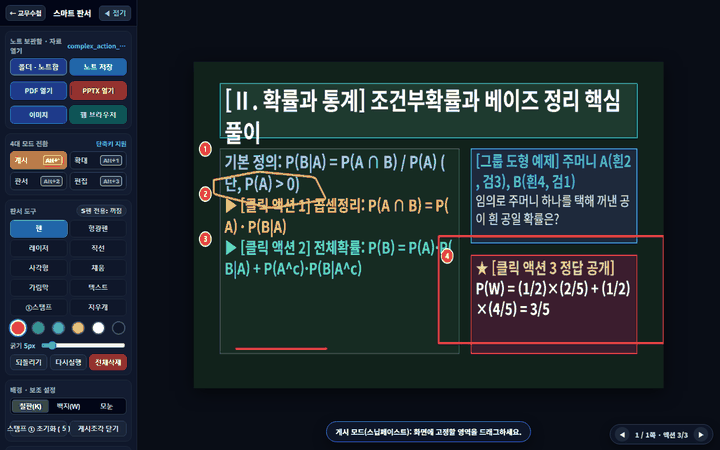
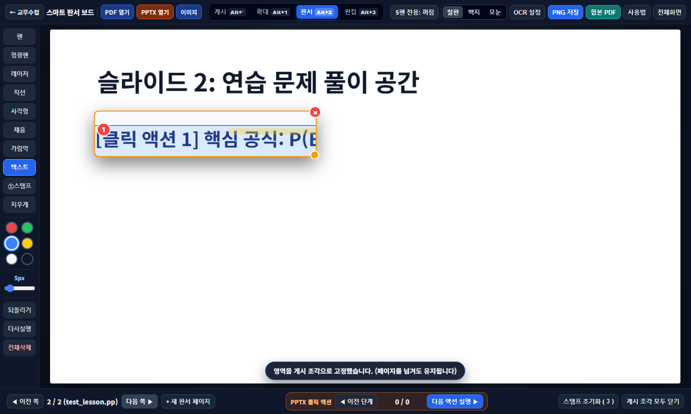
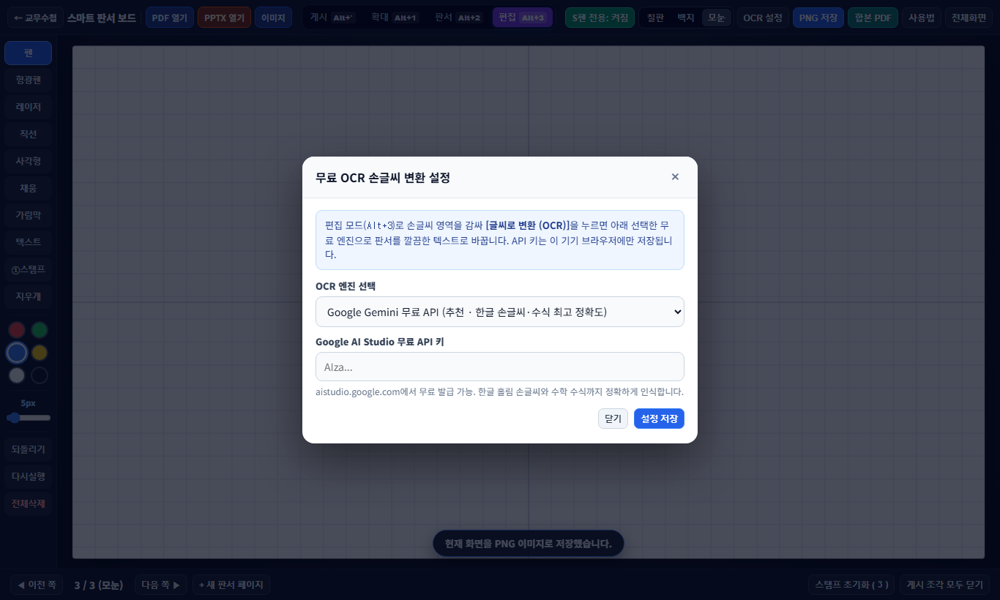

GIF 1스닙페이스트(Snipaste) 게시 모드 (Alt+`)

게시(Alt+`)를 누른 뒤 핵심 공식·조건을 드래그하면 화면 맨 위에 떠 있는 조각으로 고정됩니다.- 다음 페이지로 넘어가도 조각이 사라지지 않고 유지되며, 드래그 이동·휠/모서리 크기 조절·우클릭 삭제가 가능합니다.
| 분류 | 단축키 | 기능 및 동작 설명 |
|---|---|---|
| 팔레트 · 창 | Tab / ? (F1) / Esc | 좌측 도구 팔레트 접기·펴기 / 단축키 창 열기 / 현재 작업 취소 및 확대 100% 복귀 |
| 4대 모드 전환 | Alt + ` | 게시 모드(스닙페이스트) 켜기/끄기 — 드래그한 영역을 화면 맨 위 조각으로 고정 |
| 4대 모드 전환 | Alt + 1 | 확대 모드 켜기/끄기 — 커서 따라 화면 확대, 휠 배율 조절, 좌클릭 시 고정 후 판서 전환 |
| 4대 모드 전환 | Alt + 2 | 판서 모드 켜기 — 펜·형광펜·도형·텍스트·스탬프 필기 |
| 4대 모드 전환 | Alt + 3 | 편집 모드 켜기/끄기 — 사각형으로 선택한 판서만 이동·삭제·무료 OCR 글씨 변환 |
| 빠른 도형 그리기 | Shift + 드래그 | 도구 변경 없이 즉시 반듯한 직선 그리기 |
| 빠른 도형 그리기 | Ctrl + 드래그 / Ctrl+Shift + 드래그 | 즉시 사각형(테두리) / 채운 사각형 그리기 |
| 펜 색상 (5색) | R / G / B / Y / I | 빨강(`R`) / 초록(`G`) / 파랑(`B`) / 노랑(`Y`) / 아이보리(`I`) 즉시 변경 |
| 도구 빠른 전환 | T / S / E | 한글 텍스트 입력(`T`) / ①②③ 번호 스탬프(`S`) / 지우개(`E`) 켜기·끄기 |
| 굵기 · 배율 조절 | 마우스 휠 | 판서 모드: 펜·글자·지우개 크기 조절 / 확대 모드: 확대 배율 조절 / 게시 조각 위: 조각 크기 조절 |
| 배경 · 편집 | K / W · Ctrl+Z / Ctrl+Y / Ctrl+E | 어두운 칠판(`K`) / 밝은 백지(`W`) · 되돌리기 / 다시실행 / 현재 쪽 판서 전체 삭제 |
| 저장 · 슬라이드 진행 | Ctrl+S / Ctrl+Shift+S · Space / ← → | 현재 화면 PNG 저장 / 로컬 폴더 노트함에 저장 · PPTX 다음 클릭 액션 및 페이지 이동 |
aistudio.google.com 접속 → 구글 로그인 → 좌측 Get API key → Create API key 복사 후 아래 칸에 붙여넣기 (무료 티어 제공, 현재 브라우저에만 저장)
편집 (Alt+3)을 누르고 변환할 손글씨 판서 영역을 마우스나 S펜으로 드래그해 감쌉니다.[글씨로 변환 (OCR)]을 누르면 인식 결과가 표시되며, [선택 판서를 글씨로 교체] · [수업 메모보드로 보내기] · [텍스트 복사] 중 원하는 동작을 실행합니다.
게시(Alt+`)를 누른 뒤 핵심 공식·조건을 드래그하면 화면 맨 위에 떠 있는 조각으로 고정됩니다.
①스탬프(S)를 선택하고 화면을 클릭할 때마다 ① → ② → ③ → ④ 번호가 자동으로 증가하며 찍힙니다.가림막으로 정답을 덮어 두었다가 수업 중 클릭(탭)하면 즉시 열리고 다시 탭하면 닫힙니다.
PDF 버튼으로 교과서·시험지를 고해상도로 불러와 형광펜·펜·도형·텍스트로 자유롭게 판서합니다.합본 PDF로 한 번에 내려받습니다.
PPTX를 열면 그룹 도형·표·이미지와 클릭 애니메이션을 파싱해 다음 액션 ▶(또는 Space)으로 단계별 재생합니다.편집(Alt+3)으로 손글씨를 감싸 글씨로 변환(OCR)을 누르면 깔끔한 텍스트로 즉시 교체합니다.
◀ 접기 버튼이나 키보드 Tab 키를 누르면 팔레트가 완전히 접히고, 우측 하단 미니 버튼(◀ 1/2 ▶)만으로 수업을 진행할 수 있습니다.
폴더 · 노트함을 누르면 과목·학급별 폴더를 만들고 판서 노트를 썸네일 카드로 저장·분류할 수 있습니다..json 백업 파일로 내보내기도 가능합니다.
OCR 설정에 Google AI Studio 무료 키(AIza...)를 1회 입력해 두면 흘림 판서와 수식까지 정확히 텍스트로 변환해 판서 교체·메모보드 전송을 수행합니다.
S펜 전용을 켜면 손바닥 터치는 무시(팜 리젝션)되고 손가락으로는 확대 화면 이동과 두 손가락 핀치 줌만 작동합니다.단축키 안내 버튼(?)으로 모든 단축키 표를 확인할 수 있습니다.